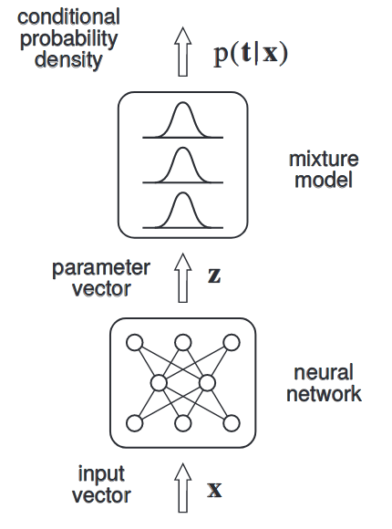
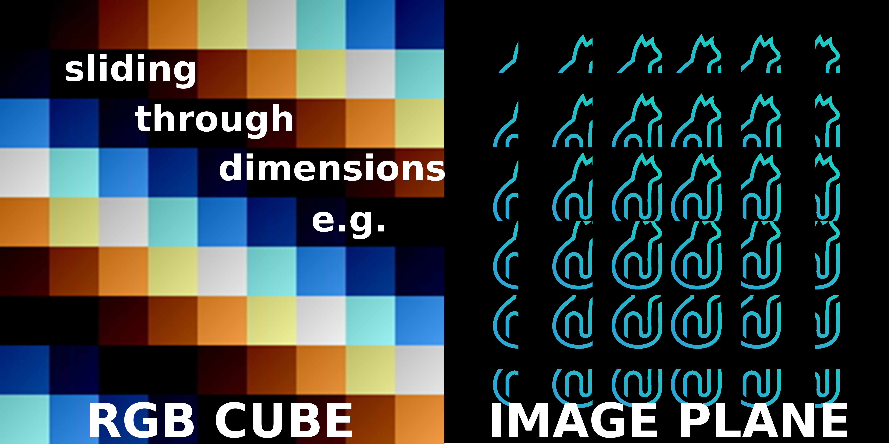

Data Orchestration Toolbox (DOT)¶
This is a toolbox for orchestrating data, with a special focus on sequences. A possible Model to build from this toolbox is a Mixture Density Network (MDN). Described in the corresponding paper by Christopher M. Bishop, 1994. Together with embeddings provided in this library sequence modelling is possible, as well as data preparation for prediction tasks.
This software toolbox lies upon the theoretical/mathematical background from Mixture Density Networks by Christopher M. Bishop, 1994. The MDN will be used to predict future states of sequential data.
Introduction¶
Given a sequence of data. The model approximates the underlying density for following states. Prior to the observation of a fixed amount of previous time steps this generative model is capable of autoregressively generate a sequence. The toolbox tries to be invariant of the dimensionality or modality of the data. For convenience the toolbox asserts the first coordinate of a tensor to be time or order of the sequence.
To accomplish that we will need a function approximator, the bayesian framework and tools to handle raw sequence data.
Machine Learning¶
For the described problem we need a software toolbox capable of preparing raw data in Machine Learning processable form. When data is preprocessed we need a universal approximator in order to get a bayesian representation of the data. In this case we took a Neural Network.
That will be found in: Neurocat
This python module consists of
- a loading class, that approximates the remaining computation time. It is necessary for the invariance of the data shape. A high dimensional data stream or a big frequency it will be good to know in practice if your computation unit needs an Hour or a week.
- methods for elegantly build and visualise Neural Network Layers in tensorflow. Graph pictures will be provided.
Bayesian Framework¶
To describe the bayesian framework and for embedding the data in time I will introduce
That will be found in: SeqMDN
This python module consists of
{kind=link}
Experiments¶
To demonstrate the power of the Toolbox, I try to use as basic examples as possible to demonstrate the dimensions of possibilities the toolbox can do.
Prerequisites¶
- tensorflow
- numpy
- matplotlib (optional if you don’t want to see plots)
- timidity
- midi2csv as well as csv2midi for multimedia interaction
Run¶
Todo
description of terminal input
Examples¶
Signals
Probabilities
- MIDI
blib blab blub
Appendix¶
Embeddings¶
A huge contribution of this Frame work are a small collection of awesome embeddings, that need to get in larger focus.
Todo
Midster und nembedding zusammenführen in eine Klasse, unique embedding hier rein, neu schreiben.
a method for a time embedding. A highlight in this documentation. Because time embedding is just a subpart of this method it’s a dimension invariant processor that can slide through tensors in sub tensors and define the amount of steps and size of the subtensor (smaller then the tensor observed). One other application would be to stride through an image for getting its kernels for a CNN Network.
general purpose emebdding
- music music embedding For future work and special case of Raw data I wrote a class capable of transforming a
Music Instrument Digital Interface (MIDI) file in a 2D matrix, describing a sequence of pitches as well as its length. Defined as timeroll in
That will be found in: Embeddings
Todo
image of embedding the music to matrix
- general purpose
- 
- unique embedding
Todo
geile visualisierung
preprocessing. With predefined decode and encode operations.
{kind=link}
{kind=link}